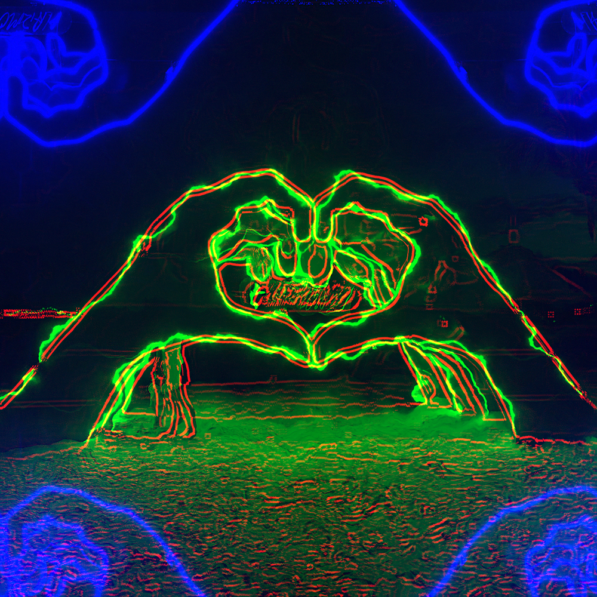
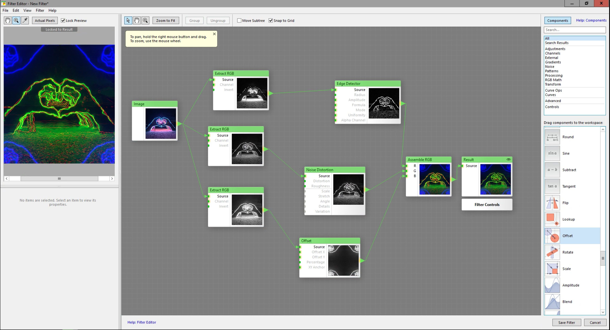
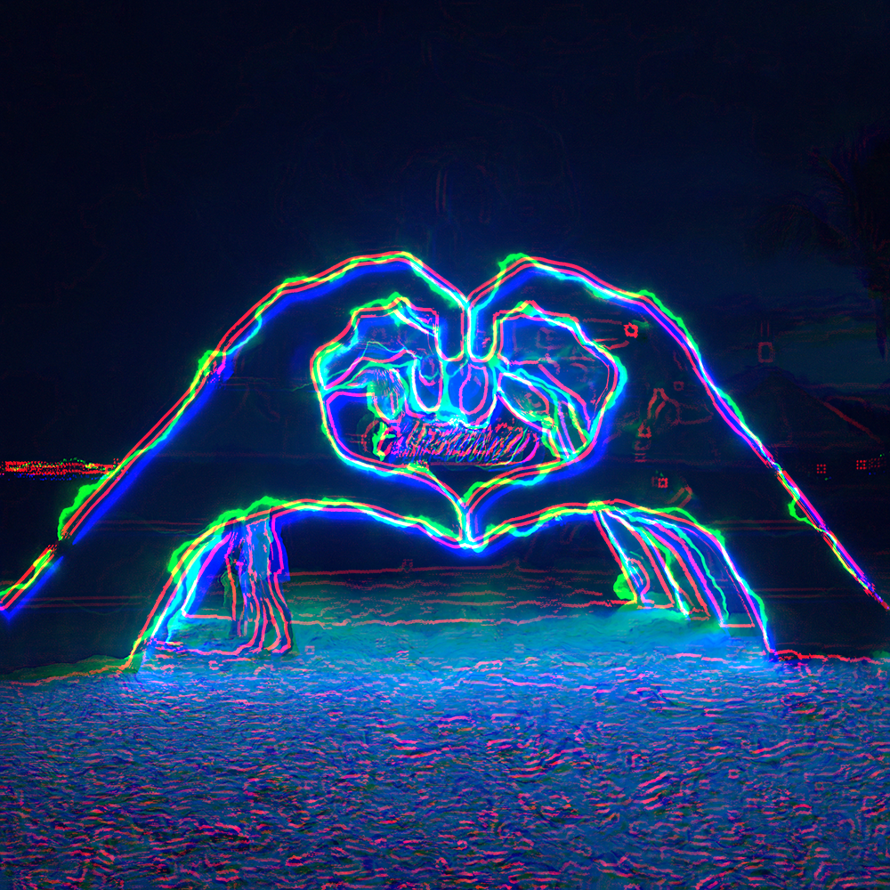
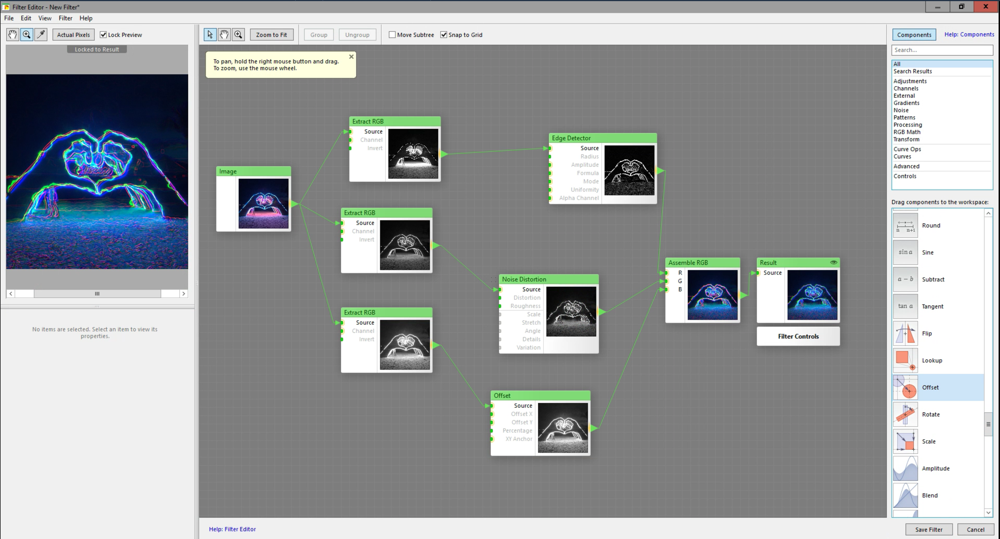
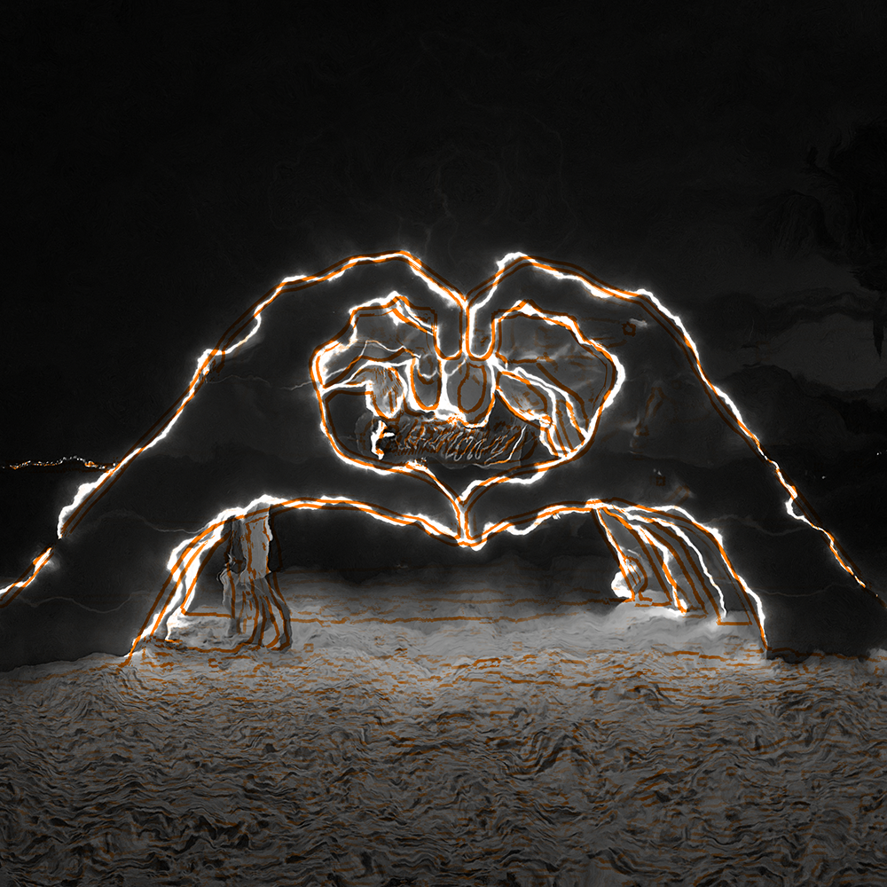
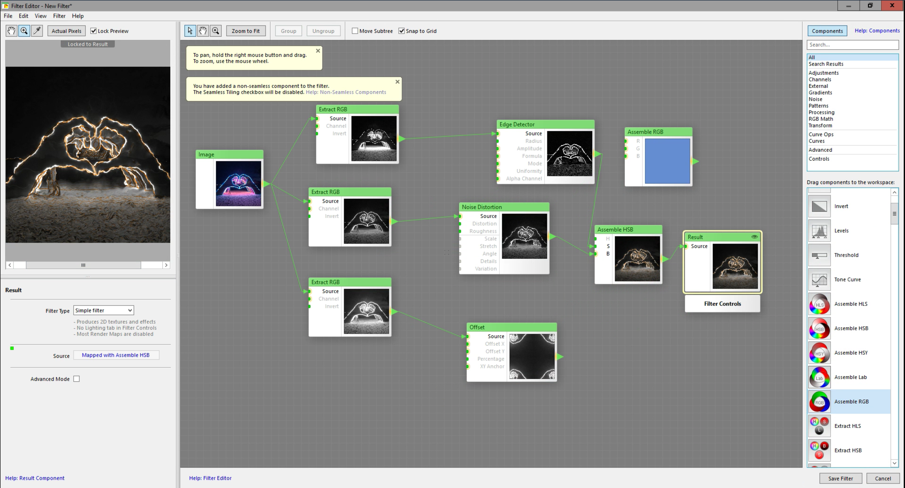
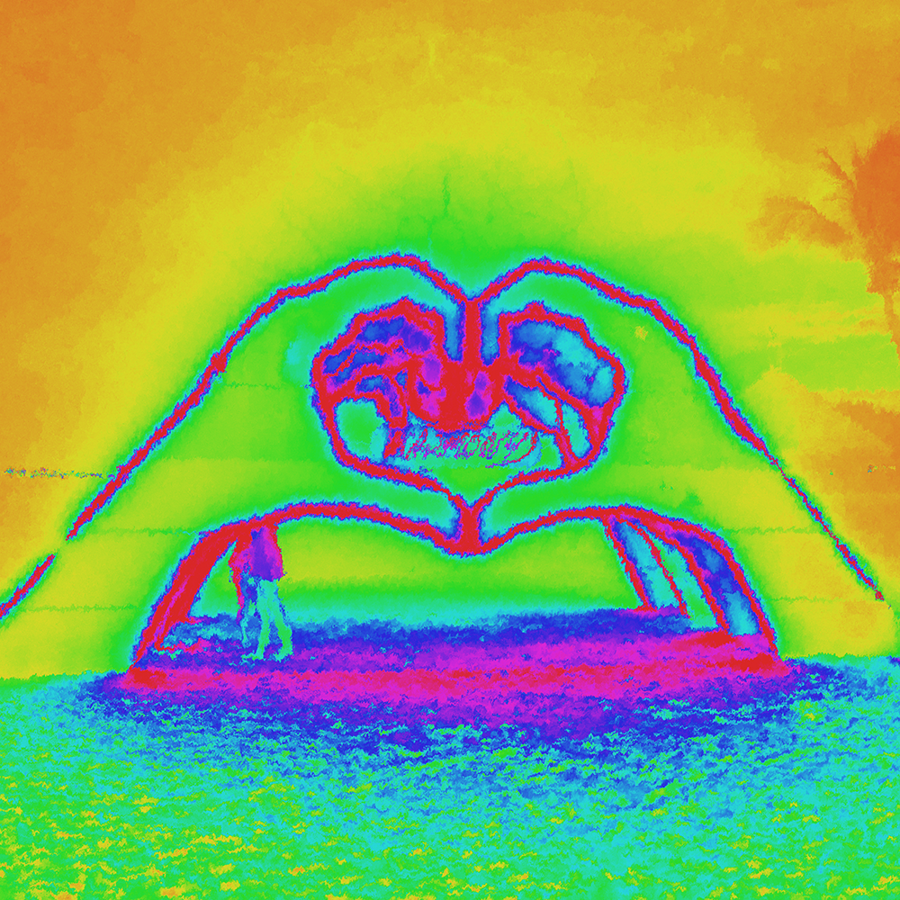
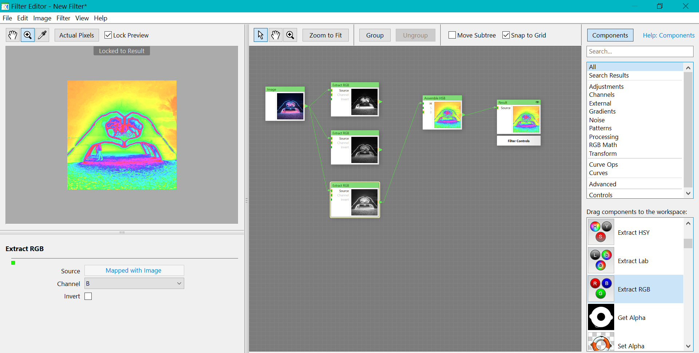
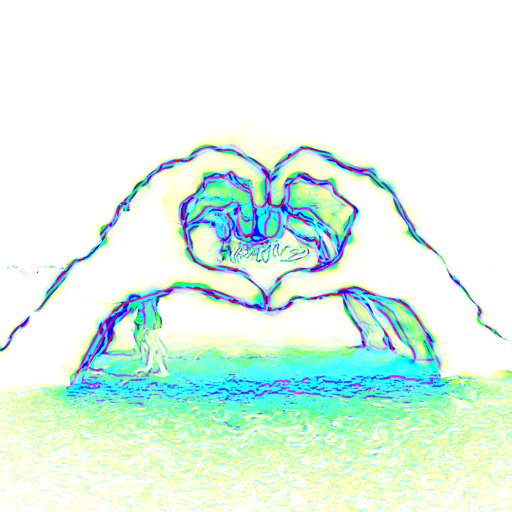
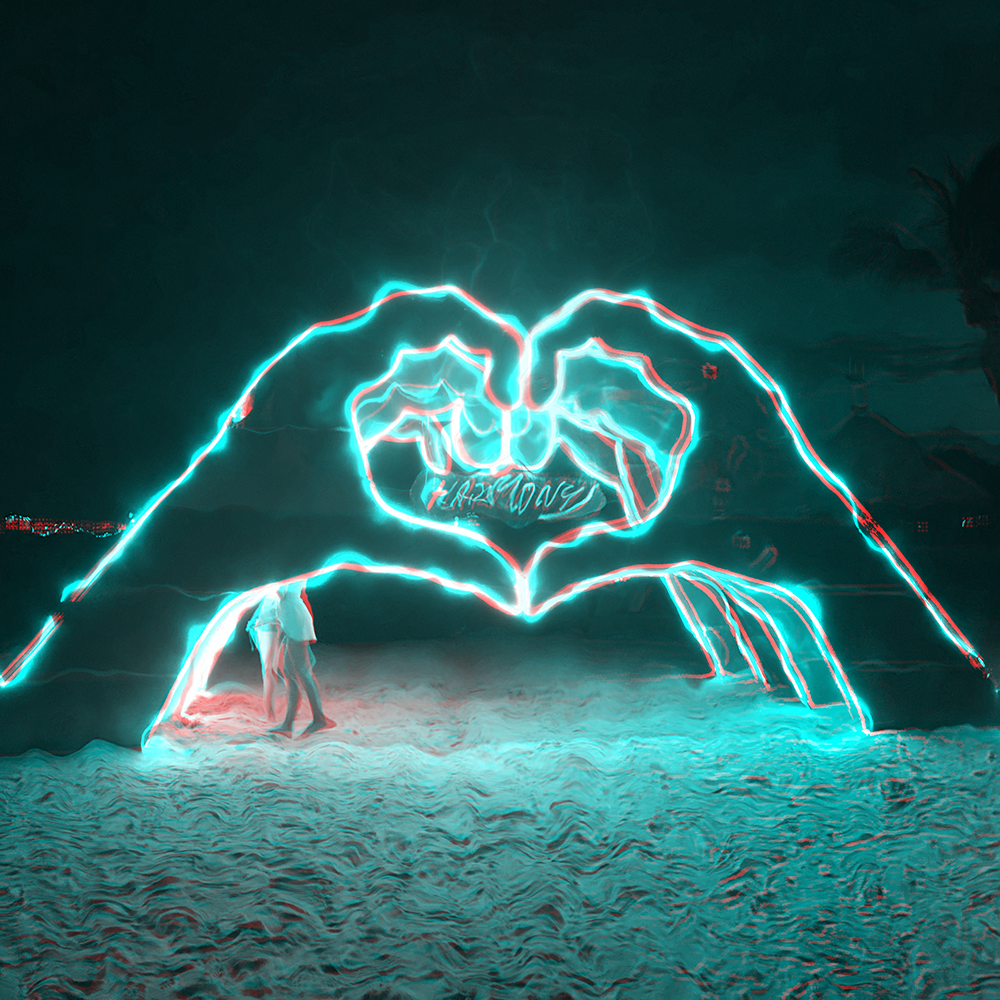

Filter Forge
This was a class taught by Carl where students experimented with Filter Forge, an image filter software.
Filter Forge allows you to mix image filter inputs and outputs around to create all kinds of results.
This was also a fun class, I learned about more visual programming and different image processing methods.
Source Image
This is the source image that I used as an input.
Filter 1

In the first filter I processed the image 3 times. I used the edge detection, noise distortion, and offset filters.
Then the R, G, B values were extracted from the filters and put together to form the final image.
Then the R, G, B values were extracted from the filters and put together to form the final image.
Filter Forge layout
Filter 2

With the second filter I turned off the offset filter from the first set of filters just to overlay the RGB results.
This resulted in a pretty nice output, the 3 filters overlap but don't mix so you can still see the 3 distinct filter outputs.
This resulted in a pretty nice output, the 3 filters overlap but don't mix so you can still see the 3 distinct filter outputs.
Filter Forge layout
Filter 3

With this filter I used the edge detection and noise distortion outputs but instead of reassembling the output into RGB, I used HSB.
I output the edge detection into Saturation and noise distortion into Brightness.
This created a pretty cool and interesting effect.
Filter Forge layout
Filter 4

This image was made by splitting the image's RGB values and inputting the B value from the image into the H value of HSV.
I like this effect because it is simple but also looks beautiful. I also instantly recognized that the colors it has looks similar to the album cover of Nobody's Love by Maroon 5.
I like this effect because it is simple but also looks beautiful. I also instantly recognized that the colors it has looks similar to the album cover of Nobody's Love by Maroon 5.
Filter Forge layout
Filter 5

This filter is slightly more complicated.
I mixed the RGB and HSV outputs after passing the original image through the edge detection and noise distortion filters.
I messed around with the inputs and outputs until I got a result I liked, which is why there is a hanging "Assemble LAB" function.
Filter Forge layout

Filter 6

This last filter was made with the help of the 3-color gradient filter.
I don't quite understand what it does but I liked the effect so I saved it.
Filter Forge layout

Additional comments
I liked playing around with Filter Forge, it's pretty fun to mess around with filters until you get a result that you like.
I would like to play around with mixing filter inputs and outputs more in the future to create pretty images.
I would like to play around with mixing filter inputs and outputs more in the future to create pretty images.